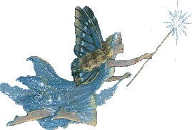

Energetickı report: Upadl vám spodek?
24.dubna 2007
Zdravím!
Jestli�e máte posledních pár dnù pocit, �e nejste ve svém tìle, vznášíte se v jakémsi neznámém prostøedí, máte pocit, �e nejste k nièemu pøipoutáni, dokonce ani sami k sobì, nebo máte pocit, �e vám upadl spodek, tak nejste sami.
Kdy� k tomu pøidáme pár bezesnıch nocí, nevolnost, závratì a k tomu tøeba ještì pocit, �e tak úplnì pøesnì nevíte, kde vlastnì jste, pocit vystrašenosti, zoufalství, nebo tøeba strach, tak je to docela pøesnı popis našeho souèasného energetického prostøedí.
Uskuteèní se vùbec nìkdy naše sny a nadìje? Jak mù�eme vùbec tvoøit to, po èem naše srdce tou�í? Kde je naše podpora? Kde to vlastnì vùbec jsme? Je vùbec nìco skuteèné? Mohu vás ujistit, �e vše je jak má bıt, a vše, jako v�dy, je pøesnì tak, jak je potøeba aby bylo.
Pøed nìkolika dny nás zasáhla mohutná vlna energie. Témìø doslova vyhodila mnohé z nás ze �idle. Tento vıbuch a energetickı náraz do naší souèasné energetické reality posunul a odvál mnohé. Byla to doba a pøíle�itost ke zmìnì a odlo�ení starıch vzorù bytí a chování a ovládání naší osobní energie. Staré vzory byly doslova odkopnuty, nebo alespoò vyneseny na povrch.
Jestli�e jste citliví jedinci, mo�ná jste cítili záchvìvy a nevìdìli proè. Hned poté, co se pøes nás tato ohromná vlna energie pøevalila, jsme se ocitli v prostoru mnohem menší hustoty. Proto mù�ete mít pocit vznášení se v prostoru, nenapojenost na nic v okolí, èeho byste se mohli zachytit. Proto mù�e bıt do znaèné míry ovlivnìn náš pocit bezpeènosti a z toho plynoucí zmatek.
Souhrnnì øeèeno, mnohé se mù�e zdát znaènì divné. Nyní je pohyb energií malı a oklopuje nás ticho. Ticho vzniklé energetickım nárazem z nedávna, kterı nás postihl.

"Nyní nastala nová vláda míru a pokoje. Nová nárazová vlna svìtla zvìstovala novı úsvit. Mù�eme se radovat z hojnosti, kterou pøinese. Je to opravdovı úsvit nové éry. Uvìdomte si, �e bude pøekypovat novımi pøíle�itostmi. Je èas na kouzla. Je èas, abyste máchli svojí kouzelnou hùlkou a sledovali, jak se zázraky dìjí."
Kdy� nepoci�ujete nic z toho, co je napsáno vıše, mù�e to mít nìkolik dùvodù. Hlavnì si uvìdomte, �e v tom nejste sami. Èím vıše vibrujeme jako planeta a jako celek, tím jsou zøetelnìjší a extrémnìjší veškeré ní�e vibrující energie, kdy� vstoupí do našeho prostoru. Proto�e vše je umocnìno èím jsme vıše a nepøíjemné pocity jsou vìtší, kdy� si pøitáhneme nìco, z èeho máme tento pocit, proto�e samozøejmì hledáme zkušenosti a vzory v sobì, které nejsou v souladu s vyššími øíšemi.
Nyní, kdy� jsme dosáhli na další stupínek na energetickém �ebøíku, jsou nám mnohé z tìchto vzorù pøímo vmeteny do tváøe se znaènou silou. Toto poslední energetické vzedmutí, èi bombardování opravdu zesílilo mnohé v nás. Toto je podivnı prostor, proto�e kdy� si nyní zvolíme negativní myšlenky, nebo udìláme nepatøiènı, èi nesprávnı pøedpoklad, je nám v plné síle a �ivıch barvách ukázáno, co jsme si mysleli, �e je pravda, i kdy� to mù�e pøicházet z velkého nepochopení vzniklého v naší minulosti.
Triviální fráze "tvoøíte si svoji vlastní realitu", je nyní mnohem pravdivìjší ne� kdykoliv pøedtím. V co vìøíme a co si vybereme, v tom budeme hrát. Jestli�e jsme schopní zamìøit naší pozornost a myšlenky na pozitivní vìci a vyšší øád, ocitneme se okam�itì v novém snu a realitì. Takto se mù�eme pozvednout nad vìdomí mas a pro�ít velmi odlišné zá�itky.
Vısledkem toho je, �e si sami tvoøíme své vlastní vìzení. A proto�e okolní energie jsou nyní klidné, panují naše myšlenky a víry, nebo to, co se opravdu vynoøuje z nás samotnıch. Tak�e kdy� se cítíte nechutnì a ve stresu, rozhození a plní strachù, je to proto, �e si povolujete pochybnosti, strachy, nejistotu a podobné energie, které vyvìrají z vás.
Tyto zkušenosti jsou zde hlavnì proto, proto�e se energie vytrácí a jsou nehybné. Tvorba nastává kdy� vše kulminuje a støetává se ... z vnìjšku, stejnì jako z vnitøku. Nikdy to není pouze jednosmìrné. Kdy� energie vyšších vibrací udeøí z vnìjšku, pak jsou to ony, které pøevládnou a my máme úplnì jiné pocity. Nyní však vnìjší energie nejsou pøítomné. Tak�e kdy� budeme vìøit, �e nás prostì na chvíli zavalilo ticho, co� se brzy zmìní - jako v�dy, mù�eme tuto pøíle�itost vyu�ít a zamìøit se na to, co opravdu chceme a po èem tou�íme.
Z tohoto dùvodu mo�ná poci�ujeme tlak abychom uèinili rozhodnutí, i kdy� máme pocit, �e nám chybí patøièná podpora. Je toho na nás dost, mù�eme bıt neobvykle zaneprázdnìni a pøitom se divit, jak se vlastnì dostaneme do další reality kterou potøebujeme a víme, �e chceme tvoøit.
Dùvìøujte tomu, �e se vìci zmìní. Dùvìøujte tomu, �e budete podpoøeni. Dùvìøujte tomu, �e nyní pro�íváme pouze období klidu po bouøi, která se pøes nás nedávno, jako vlna energie vyšší vibrace, pøehnala. A vìzte, �e andìl se vzkazem, kterı se neèekanì objevil, mìl pravdu.
Pøeji vám v tomto kouzelném období nebe v srdci, hvìzdy v duši a zázraky ve vašem �ivotì.
Do pøíštì nashledanou,
Karen Bishop
originál najdete na http://www.whatsuponplanetearth.com
pøeklad V.Kašpárek 2007
- - - - - - - - - - - - - - - - - - - - - - - -